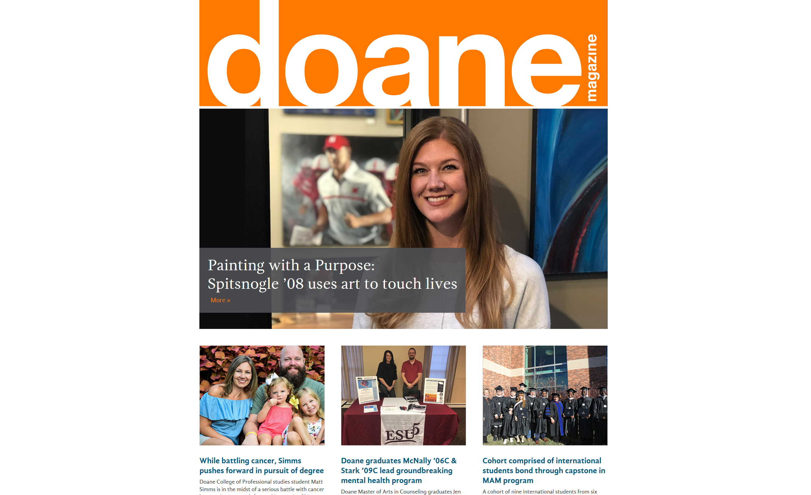

- Highly-skilled in creating HTML and CSS.
- Passionate about well-formed and efficient JavaScript.
- Thinks PHP is actually pretty cool.
- Loves task runners, package managers, version control, && automation scripts.
- Knowledgeable on accessibility, user-experience, responsive web design, and Drupal.
- Excessive knowledge on ideal coffee brewing ratios, temperatures, and devices.

Chet Gassett
Web Developer // Content Writer // Coffee Nerd
At the heart of it all, I am a web developer. I use various languages to build websites, and I focus on building strong relationships between marketing and IT, and IT and users.
Drupal has been the primary CMS for all of Doane University’s web based needs. Uniquely, my position was designed to primarily support the Web Development vision of Doane's marketing office. Because of this position, I’ve become adept at quickly developing products which meet the needs of many user bases at any given time, particularly through developing new PHP features, custom Drupal Module development, writing HTML and CSS (SASS), and utilizing JavaScript (Vanilla & jQuery) for requested DOM manipulation and AJAX requests.
I also work from a person-centered perspective where my relationships with my colleagues and clients are very important to me. This is most easily showcased in my one-on-one training sessions with web authors and editors, and in mentoring work-study Computer Science students. I've devoted a lot of my time to being better at teaching people ways to feel empowered as they learn how to edit and build information into the website.
Skills
Professional Experience
Web Developer & Content Specialist
Doane University — Crete, NE & Remote
August 2013 - Present
Housed in IT, but works closely with marketing office to develop Web features showcasing Doane University to prospective on-ground and online students.
Day to Day
- Develop new features for the doane.edu website using Drupal 7, PHP, HTML, CSS, JavaScript (Vanilla & jQuery), and MySQL
- Thorough knowledge of WCAG standards
- Develop JavaScript for communcating between Web forms and Ellucian Recruit CRM, including PHP & MySQL based back-up system
- Maintain current and legacy code bases written using PHP, HTML, and CSS
- Develop custom Drupal modules as needed to prevent new features from interfering with base theme
- Extensive problem solving for Drupal related needs
- HTML Email Design and Development
- Manage implementation of Google Tag Manager across doane.edu
- Create and deliver reports from Google Analytics
Management
- Supervisor for Web interns, typically 1 per academic year, in IT for the past 3 years
- Lead training of all new Web authors and Web editors to meet website standards. 30 active authors & editors per year
Web Developer Assistant
Fort Western Stores — eCommerce Department — Lincoln, NE
March 2011 - August 2013
Web development focused on eCommerce needs including SEO, HTML Email development, and daily writing of HTML, CSS, and PHP.
- Developed new features and maintain fortwestern.com
- Optimized website for mobile browsers
- Actively created social media content reflecting new events and deals for customers
- Developed and implemented SEO strategies
Bookseller & Marketing Coordinator
Indigo Bridge Books & Cafe — Lincoln, NE
April 2010 - July 2011
Hired primarily as a bookseller, but quickly moved into developing marketing plans and the website to attract more customers.
- Edited and managed the Indigo Bridge website and blog using a CMS
- Designed and developed marketing campaigns based on my formal public relations education for monthly events such as the First Friday Art Walk
- Utilized print media to market various events, such as Banned Books Week
- Maintained stock levels for assigned sections using Booklog POS Software
- Managed the upgrade to a new version of Booklog
- Developed a training manual for employees on how to fully utilize Booklog
- Researched new and upcoming releases to make informed stock decisions
Projects
sRAT | Personal Project
The Squad Readiness Assessment Test is SAAS born from the need for a modern in-class quiz tool to replicate the scratch-off cards that have more traditionally been used in team-based learning environments. sRAT allows teams of students to collectively take quizzes added by their professor live during class.
Add link to GH - Add ReadMe to GH
Technology Used:
- HTML
- CSS
- Foundation 6
- JavaScript
- Node.js
- AWS EC2
Project Request Forms | Doane University
In an effort to streamline requests coming into the marketing and web team offices I created a pair of forms which collect pertinent project and/or request information from a user, then sends that data to Flow - our project management system. Users also have the choice to submit example files with their requests, these files are then sent to a Google Team Drive.
Add link to GH - Add ReadMe to GH
Technology Used:
- HTML
- CSS
- JavaScript
- PHP
Open Learning Academy | Doane University
The Open Learning Academy (OLA) launched with a renewed web presence at the beginning of 2019. My role in this project was to take the front-end HTML and CSS, and integrate it into Drupal. I built a custom module to house the OLA specific CSS, JavaScript, and various Templates: content types, blocks, views.
Add link to GH - Add ReadMe to GH
Technology Used:
- HTML
- CSS
- Foundation 6
- JavaScript
- PHP
- Drupal
Doane Magazine | Doane University
In late 2018 Doane University launched a fully online magazine experience for its alumni. Loaded with fresh layouts from the UI Designer I worked to build out the Drupal needs for this project. There are many custom templates, content types, views, blocks all coming together in the updated Doane Magazine webpages.
Technology Used:
- HTML
- CSS
- JavaScript
- PHP
- Drupal

Testimonials | Doane University
Marketing efforts at Doane began to include collected testimonials from current students and alumni. I was tasked with designing and developing a home for the testimonials on the Doane website. Utilizing a custom content type, Views, and a hefty amount of custom templating the testimonials can be viewed collectively, individually, and even placed in randomized blocks wherever desired on the site.
Technology Used:
- HTML
- CSS
- JavaScript
- PHP
- Drupal
Education
Bachelor of Arts in Mass Communications
with Public Relations emphasis
Magna Cum Laude
Sam Houston State University — Huntsville, TX
2009